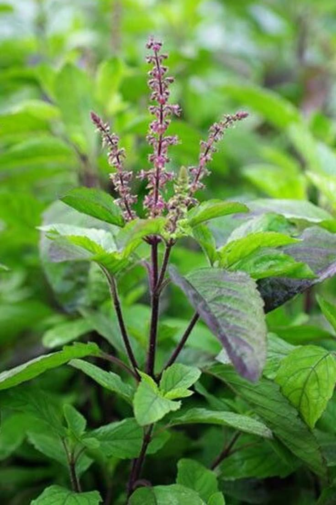
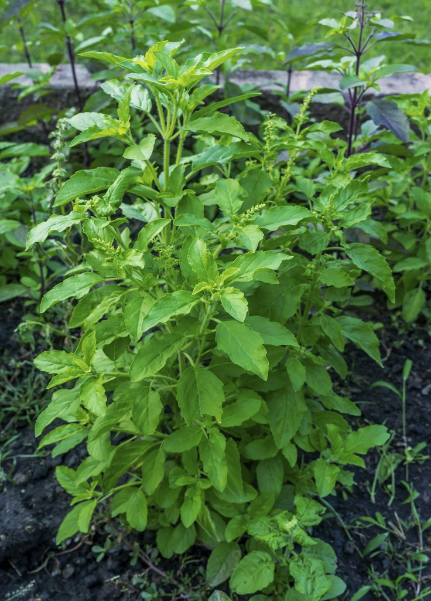
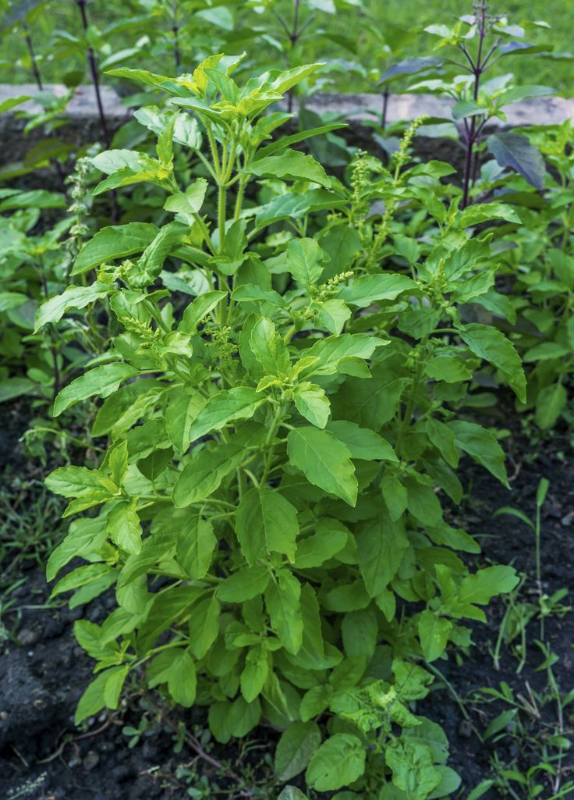
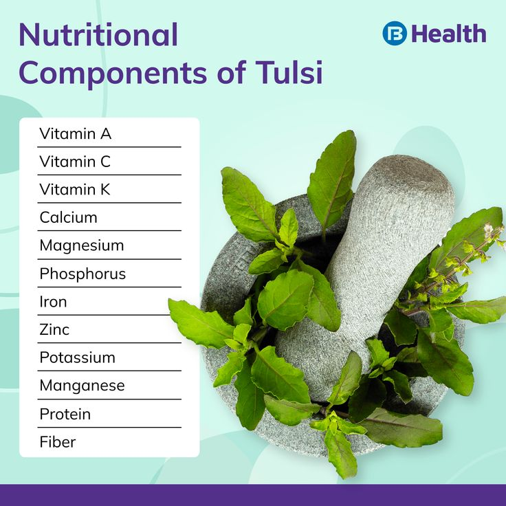
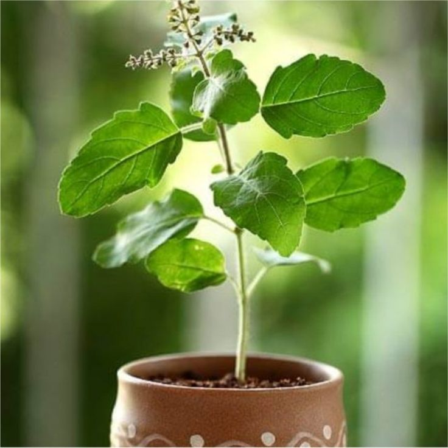

Tulsi (Holy Basil)



General Information
Scientific Name: Ocimum tenuiflorum (also Ocimum sanctum)
Family: Lamiaceae (Mint family)
Type: Perennial aromatic herb or small shrub
Height: 30 to 100 cm (1 to 3 feet)
Uses of Tulsi:
- Medicinal: Used in Ayurveda for respiratory, digestive, and stress-related issues.
- Religious: Worshipped in Hindu households; planted near homes and temples.
- Tea & Tonics: Leaves used to make herbal tea, kadha, and extracts.
Medicinal & Biological Uses:
- Contains eugenol, ursolic acid, and other antioxidants with antimicrobial properties.
- Used to treat colds, cough, fever, and skin conditions.
- Acts as an adaptogen, helping the body manage stress.
- Note: Safe in moderate use; consult professionals for concentrated extracts.


Description
Tulsi is a sacred herb in Indian tradition, known for its aromatic leaves, purple stems, and therapeutic value. It is branched, bushy, and thrives in warm climates. The leaves are oval with a slightly toothed margin.
Habitat & Growth
- Native Regions: Indian subcontinent and tropical Asia
- Soil: Prefers well-drained, fertile soil with organic matter
- Sun: Needs full sunlight for optimal growth
- Watering: Moderate watering; avoid waterlogging

Propagation
Tulsi is commonly propagated through seeds or cuttings. Seeds germinate easily in warm soil, and cuttings root well in moist conditions. It’s often planted during early summer or monsoon.
Fun Facts & Cultural Significance
- Regarded as the “Queen of Herbs” in Ayurveda.
- Often grown in courtyards and worshipped daily in Hindu homes.
- Associated with purity and protection from evil influences.
- The Tulsi Vivah festival celebrates the ceremonial marriage of Tulsi to Lord Vishnu.